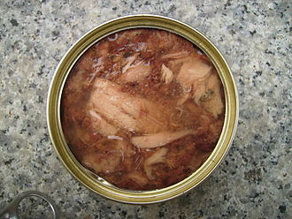

Cat food is food for consumption by cats. Cats have specific requirements for their dietary nutrients.[1] Certain nutrients, including many vitamins and amino acids, are degraded by the temperatures, pressures and chemical treatments used during manufacture, and hence must be added after manufacture to avoid nutritional deficiency.
Malnutrition can be a problem for cats fed non-conventional diets. Cats fed exclusively on raw, freshwater fish can develop a thiamine deficiency. Those fed exclusively on liver may develop vitamin A toxicity. Also, exclusively meat-based diets may contain excessive protein and phosphorus whilst being deficient in calcium, vitamin E, and microminerals such as copper, zinc, and potassium. Energy density must also be maintained relative to the other nutrients. When vegetable oil is used to maintain the energy balance cats may not find the food as palatable.
